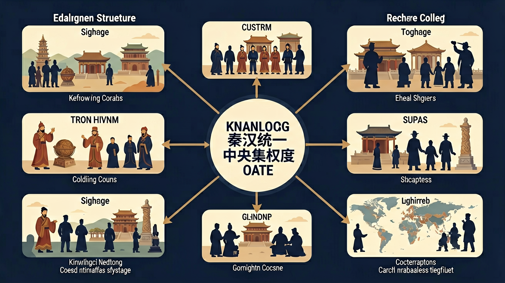

通过了解秦朝的统一业绩和汉朝削藩、开疆拓土、尊崇儒术等举措，认识统一多民族封建国家的建立及巩固在中国历史上的意义。

🎯 能说出秦朝建立中央集权制度的三大措施（郡县制、三公九卿、统一度量衡）
🎯 能分析汉武帝'推恩令'对削弱诸侯王势力的作用机制
🎯 能比较郡县制与分封制对国家治理的利弊差异
❓ 秦始皇为啥非要搞郡县制？直接让六国贵族接着管不行吗？
❓ 课本说'书同文'很伟大，但当时老百姓真的愿意改掉自己习惯的字吗？
❓ 汉武帝推恩令听起来像在帮诸侯子弟，为啥诸侯王却越来越弱了？
学完这一课，这些问题你都能自信地回答。
秦朝郡守的产生方式是？
汉武帝'推恩令'的直接目的是？
秦汉统一与中央集权制度是高中历史的重要内容。通过了解秦朝的统一业绩和汉朝削藩、开疆拓土、尊崇儒术等举措，认识统一多民族封建国家的建立及巩固在中国历史上的意义。
通过了解秦汉时期的社会矛盾和农民起义，认识秦朝崩溃和两汉衰亡的原因。
点击时代/图层按钮切换地图；悬停边界，点击城市标记查看说明。
中央集权指中央对地方的有效控制，君主专制指皇权至高。秦汉通过郡县、官僚、统一制度与思想文化措施强化集权。认识其历史作用：维护统一、促进经济文化交流，也存在暴政与社会矛盾风险。
答题先定义，再举措施，最后辩证评价。郡县制对应集权，皇帝制度对应专制；二者相关但不等同。
常见误区：常见误区是把君主专制与中央集权混为一谈，评价时只讲压迫不讲统一意义。
中央集权主要强调？
1. 现代行政区划借鉴：省级区划直接源自元朝行省制度，但省-市-县三级结构可追溯至秦汉。2023年雄安新区设立时，参考了秦代"道"的特殊建制（如内史辖地直管），在行政区与经济区分离方面做出创新。
2. 考古科技验证集权程度：通过X射线荧光光谱分析战国货币成分，发现秦半两钱含铅量稳定在18-22%，而六国货币差异显著。这种标准化生产印证了《秦律十八种》"为器同物者，其小大、短长、广夹必等"的记载。
3. 文书系统对电子政务的影响：汉代"邮书课"考核制度（悬泉汉简记载传递时限）启发现代OA系统。某省级政务平台将公文流转时间缩短30%，其底层逻辑与居延汉简中的"收发文记录簿"高度相似。
问题1：秦始皇为何选择"皇帝"而非"天子"称号？分析线索：比较殷周"天命观"与秦"五德终始说"，注意《史记》记载秦王政强调"太古有号毋谥"。从"寡人以眇眇之身"这段泰山刻石内容，思考称号变更对官僚体系的影响。
问题2：汉初郡国并行制真是妥协产物吗？分析线索：重新审视《二年律令》中诸侯王"自置吏"的权限边界，对比长沙马王堆汉墓与满城汉墓的礼器规格。注意贾谊《治安策》"一胫之大几如腰"的比喻背后，存在着中央对王国经济的实际控制手段。
先从战国七雄的货币差异讲起——楚国的蚁鼻钱、齐国的刀币、秦国的圜钱，这些实物揭示分裂状态下的治理困境。接着看商鞅"为田开阡陌"的深层意义：不仅是土地改革，更是通过"编户齐民"建立直达个体的统治网络。秦统一后，将这套系统推向全国，里耶秦简记载的"迁陵县"档案显示，一个三万人的县竟有135名官吏。
中央层面，通过太尉-丞相-御史大夫的"三公"分权，配合郡守-县令-乡啬夫的垂直管理，形成"如身使臂，如臂使指"的控制体系。但要注意《张家山汉简》揭示的真相：汉初县廷判决死刑仍需上报廷尉，说明集权程度存在宣传与实际的差距。
最后聚焦思想控制手段：秦始皇"别黑白而定一尊"不单是焚书坑儒，更有"以吏为师"的制度设计。北大藏西汉竹简《苍颉篇》作为学童识字课本，开篇就是"秦兼天下，海内并厕"，这种教科书级的意识形态灌输，直到东汉白虎观会议才被新的经学体系取代。
1. 错误表现：认为秦朝"郡县制"完全取代了分封制。认知根源：学生容易将教材中"废分封，行郡县"的表述绝对化。正确理解：秦朝在边疆地区仍保留少量分封（如南海郡尉赵佗），西汉初期更是实行郡国并行制。考古发现的"封泥"实物证明，诸侯王在文景时期仍掌握部分行政权。
2. 错误表现：混淆"三公九卿"与"三省六部"的职能。认知根源：对中央官制演变缺乏系统认知。正确理解：秦朝丞相"掌丞天子助理万机"（《汉书·百官公卿表》），唐初三省长官则需互相制衡。以军权为例，太尉在秦汉时期是最高武职，而唐朝兵部仅负责军政事务，调兵权归皇帝直接掌握。
3. 错误表现：低估"书同文"政策的技术难度。认知根源：现代人难以想象前工业化时代的标准化困难。正确理解：秦统一前各国"文字异形"（《说文解字序》），仅"马"字就有7种写法。云梦睡虎地秦简显示，基层官吏需接受"史子"培训，用标准小篆重抄旧文书，这个过程持续到汉武帝时期才基本完成。
复制提示词到 AI 学伴，生成「秦汉统一与中央集权制度」的时间轴或事件提纲；也可以上传你手绘的示意图，请 AI 学伴点评。
复制后可粘贴到 AI 学伴继续对话。
下列关于秦朝中央集权制度的说法，哪项正确？
阅读秦始皇陵出土的竹简资料，分析秦朝中央集权制度的特点及其历史影响。
关于秦汉统一与中央集权制度的学习，哪种做法最科学？
选一个并查看反馈。
先独立作答，再点选项查看对错与错因。
秦朝推行郡县制的主要目的是什么？
下列哪项最能体现秦朝中央集权制度的特点？
秦朝统一后，为了巩固统治采取的最重要措施是什么？
秦朝在地方推行____制，取代了周朝的____制。
答案：郡县|分封
郡县制是秦朝建立中央集权的重要制度，取代了周朝的分封制。
秦朝的三公指的是丞相、____和____。
答案：太尉|御史大夫
三公制度是秦朝中央集权的重要体现，分管行政、军事和监察。
✅ 仅焚烧民间私藏诗书，官方博士官仍保留典籍
💡 将'焚书'范围绝对化
✅ 丞相是法定决策者，内阁仅是皇帝秘书班子
💡 忽视制度演变的阶段性特征
口诀：皇权不下县？错！郡县三公管到底
类比：中央集权像手机操作系统——皇帝是CPU，郡县是APP，必须定期更新（如推恩令）
（真题）《汉书》载'主父偃说上曰：今诸侯子弟或十数，而适嗣代立...愿陛下令诸侯得推恩分子弟。'此政策根本目的是？
（迁移）现代国家在少数民族地区设立自治州，与汉代'郡国并行制'本质不同在于？
（情境）考古发现秦代某郡兵器刻铭'廿六年，临淄守造'，此现象最能说明？
点击节点跳转到对应章节；可切换布局。